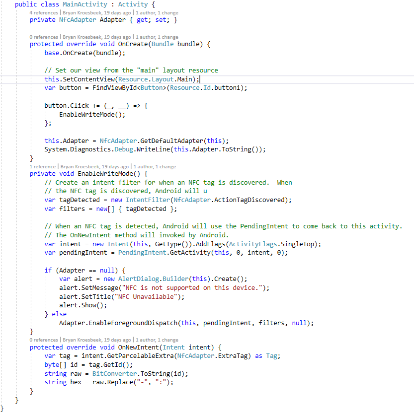

Als opdracht voor de Hogeschool moest ik leerdoelen opstellen die ik gedurende een onderwijsperiode zou proberen te halen,
dit leerdoel mocht van alles zijn, zolang het maar zinvol was.
Hieronder staan 2 secties over mijn reflectie
van het proces om mijn leerdoel te proberen te halen.
Leerdoel 1
Plannen
Voor mijn eerste leerdoel had ik gekozen om te gaan plannen. Hiervoor zou ik een agenda gebruiken waarin ik alle taken opschrijf
die ik moet doen. Hierdoor zou ik een overzicht hebben met alle taken die ik moet doen.
Dit zou mijn
uitstelgedrag moeten verminderen, omdat de taken die ik moet doen dan in de agenda staan en ik mijzelf ertoe zal verplichten
om ze te maken.
Ik maakte het echter moeilijker voor mijzelf, omdat ik uitstelgedrag toonde met het maken van
een agenda waarin ik alles zou plannen om mijn uitstelgedrag te verminderen.
Dit leerdoel heb ik aan het einde
van de onderwijsperiode ook niet gehaald. Tijdens groepsgesprekken, die je met je projectgroepje hebt, kwam er wel
uit, dat ik niet in de problemen was gekomen door het niet plannen van de dingen die ik zou moeten doen. Er was geen
nood om een agenda te gebruiken, omdat ik wist wat ik moest maken en wanneer dat af moest zijn.
Leerdoel 2
Het verbeteren van mijn kennis in C# (CSharp)
Voor mijn tweede leerdoel heb ik gekozen om mijn kennis in C# te verbreden. In de tweede onderwijsperiode van het schooljaar
2015/2016 had ik het keuzevak "programmeren in dotNET". In dit keuzevak heb ik kennis gemaakt met C# en heb ik geleerd
hoe ik verschillende programma's kan maken met deze taal. Deze Periode was ik meer bezig met het keuzevak dan dat ik
bezig was met de andere vakken.
Uiteindelijk heb ik in onderwijsperiode 4 de kracht van C# gemerkt toen ik voor een opdracht iets moest programmeren.
Vanaf dat moment wilde ik me echt meer gaan verdiepen in C# om deze taal onder de knie te krijgen. Ik wist dit te kunnen
bereiken met de kennis die ik had opgedaan tijdens de lessen op school, plus wat ik al had geleerd bij het keuzevak.
Vanaf dat moment ben ik begonnen met een groot project in C#, een game maken. Ik weet dat het een uitdaging
zal zijn en dat het lang zal duren voordat het af is, maar het zal me wel de taal C# leren beheersen.
Ik vind dat ik dit leerdoel heb gehaald omdat ik nu heel goed de structuur van C# begrijp en weet hoe ik het moet
toepassen. Ik heb het programma als bewijs bijgevoegd in dit artikel en een foto plus video. Mijn Game
Leerdoel 3
Minder lang doorwerken aan een probleem als ik er na een bepaalde tijd niet uitkom
Voor mijn derde Leerdoel heb ik gekozen om minder lang aan een probleem door te werken als er na een bepaalde tijd niet uitkom.
Want als ik door blijf werken aan een zo'n probleem en er niet uit kan komen, raak ik steeds gefrustreerder. Dit zorgde
ervoor dat mijn focus op het probleem steeds minder werd, waardoor het oplossen steeds moeilijker ging.
De oplossing die ik voor dit probleem had was dat als ik met een dergelijk probleem kom te zitten welke lastig
op te lossen is, ik niet 3 tot 4 uur lang blijf proberen een oplossing te bedenken als het me niet lukt. Want dit zou
mij vervolgens gefrustreerd maken, waardoor ik nog moeilijker een oplossing kan bedenken. Dit houdt in dat ik regelmatig
een pauze neem om even tot rust te komen en het dan nog eens proberen. Hierdoor kan ik mijn focus herpakken en sneller
tot een oplossing komen. Als het dan nog steeds niet lukt, zou ik om hulp kunnen vragen bij iemand die er veel verstand
van heeft.
In het project dat ik in onderwijsperiode 3 van leerjaar 2 is dit ook voorgekomen. Want ik kwam er niet uit
hoe ik ervoor kon zorgen om een NFC-kaart uit te lezen. Uiteindelijk heb ik een groepsgenoot om hulp gevraagd, die
heeft mij geholpen om het lezen van de NFC-kaart voor elkaar te krijgen. Hierbij heeft hij ook zijn denkstappen uitgelegd
over hoe hij een probleem aanpakt. Hierdoor was het probleem heel snel opgelost en kon ik weer verder met de taken
die ik verder moest uitvoeren. Dit was voor mij heel leerzaam en zal mij kunnen helpen problemen in het vervolg sneller
en beter op te kunnen lossen.
Hieronder staat de foto van de code die is geschreven als bewijs dat ik dit leerdoel heb gehaald.

Leerdoel 4
Het leren van de basics van F#
Voor mijn 4e leerdoel heb ik gekozen voor het leren van de basics van F#. Ik heb dit leerdoel gekozen, omdat ik in de 4e onderwijsperiode
van jaar 2 het vak "Advanced Programming" kreeg. Tijdens deze periode kregen we les in de Lambda Calculus en de mogelijkheden
die het kan bieden. Ook zagen we in deze lessen hoe de Lambda Calculus toegepast kan worden in een programmeertaal
zoals F#. Hierdoor was ik heel nieuwsgierig geworden naar hoe de taal werkt en wat voor toepassingen hiermee gemaakt
kunnen worden.
Om dit leerdoel te behalen had ik voor ogen om een component van een
applicatie die ik heb gebouwd te vervangen met een component
die dezelfde functionaliteit bood en geprogrammeerd was in F#. Hiermee kon ik laten zien dat ik het leerdoel zou hebben,
en dat ik de basics van F# begrijp. Om dit aan te kunnen tonen heb ik mijn geschreven code als bewijslast bijgevoegd.
Na dit geschreven te hebben, ben ik van plan meer software in F# te maken en me nog meer te verdiepen in
de toepassingsmogelijkheden van de programmeertaal.